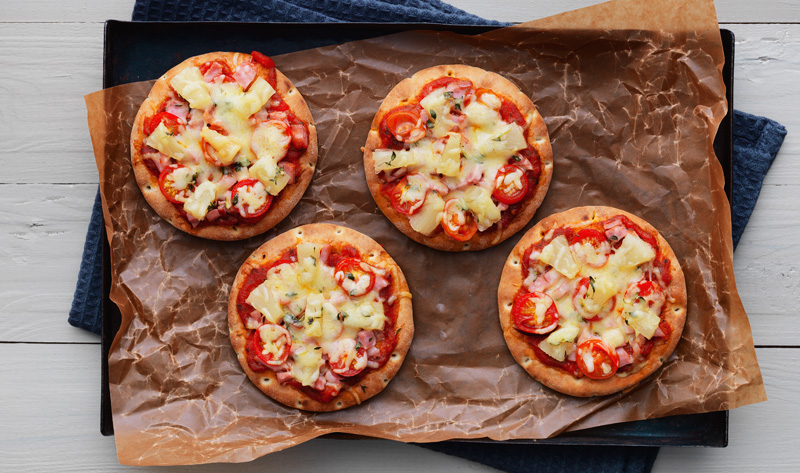

Polar Pizza
4 Stk Polarbrød
½Stk paprika
150g Pepperoni
2 Dl pizzasaus
3 Dl revet ost
1.Sett ovnen på 225 °C.
2.Bre pizzasaus på polarbrød, og ha over på et stekebrett som er dekket med bakepapir.
3.Fordel paprika og pepperoni på polarbrødene.
4.Dryss over ost og stek midt i ovnen i 10 minutter, eller til osten har pen farge.
